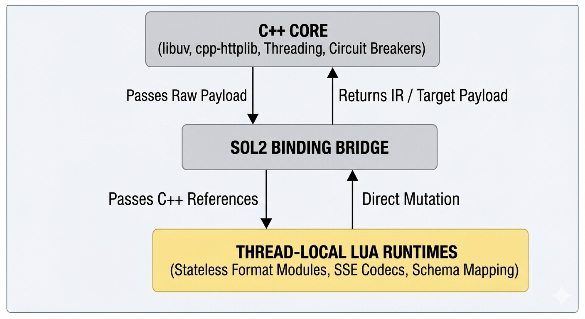
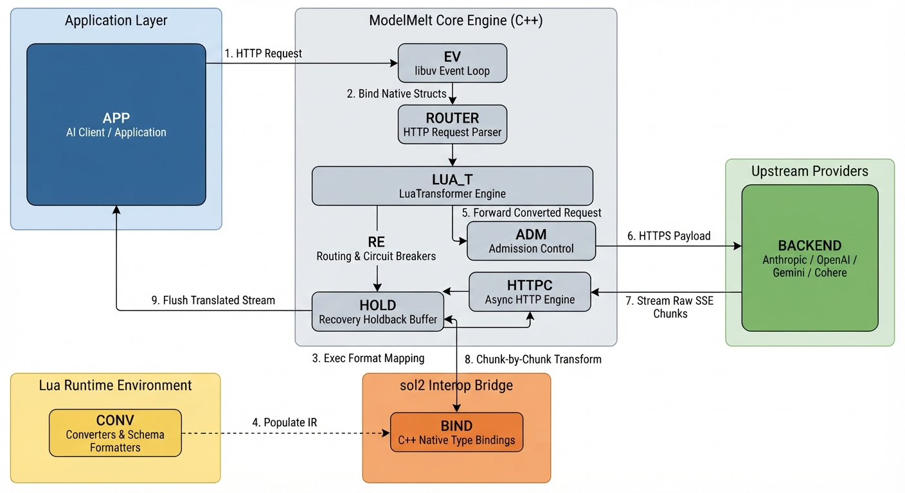
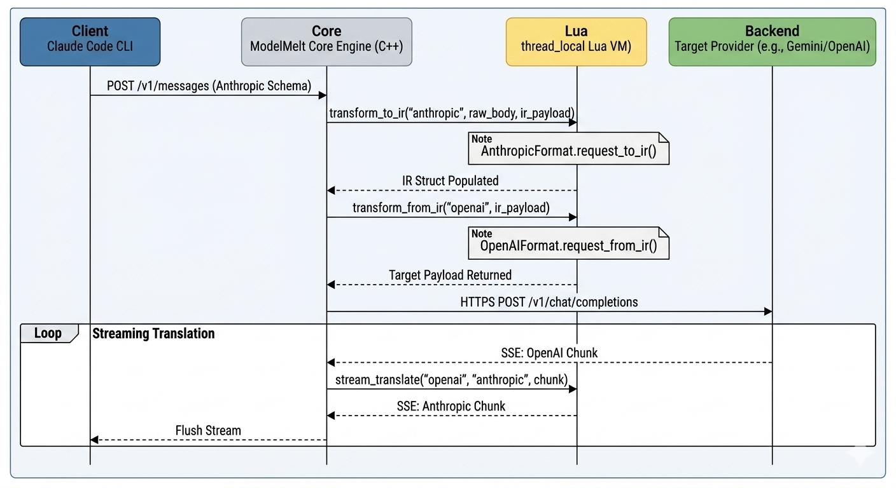

Building a High-Performance C++/Lua Hybrid Core for LLM Vendor Freedom
1. Introduction & The Core Problem
Integrating Large Language Models into high-performance applications creates a major architectural challenge: vendor lock-in caused by wire-protocol fragmentation. Every LLM provider uses different data structures, parameter conventions, error models, and Server-Sent Event (SSE) streaming formats.
When building AI-native applications (multi-agent systems, real-time analytics, autonomous pipelines), supporting multiple providers traditionally leads to two sub-optimal choices:
- Application-Level Coupling: Ingesting provider-specific SDKs directly into core service code, coupling business logic to vendor schemas.
- Bespoke Translation Layers: Building single-purpose wrappers for every provider pair—an $O(N^2)$ engineering problem that increases maintenance overhead.
The Core Solution
To solve this, I built ModelMelt: a generic, asynchronous C++/Lua core library designed to sit between application logic and LLM providers. By combining a compiled C++ core with embedded, stateless Lua transformers, the library isolates high-throughput network processing from volatile provider wire formats.
2. Core Architecture: High-Performance C++ Meets Dynamic Lua

The core engine divides responsibilities along a single axis: operational stability versus schema flexibility.
| Architectural Layer | Responsibilities | Technology Stack | Rationale |
|---|---|---|---|
| Stable Core (C++) | Async I/O, concurrency management, memory lifecycle, circuit breaking, admission control. | C++20, libuv, cpp-httplib | Guarantees thread-safe, low-latency, deterministic execution under heavy loads. |
| Dynamic Layer (Lua) | Wire-format mapping, error payload normalization, SSE chunk encoding/decoding. | Lua 5.4, embedded via sol2 | Enables schema modifications at runtime without recompiling C++ binaries. |
System Execution Pipeline

Zero-Copy In-Place Mutation via sol2
Passing serialized JSON across language boundaries creates latency bottlenecks. ModelMelt eliminates this penalty by exposing native C++ Intermediate Representation structs (IRPayload, IRMessage, IRContentPart) directly to Lua via sol2 bindings.
- The C++ engine allocates an
IRPayloadstruct on the stack. - A reference (
std::ref(output_ir)) is passed directly across thesol2bridge into the Lua state. - Lua mutates the C++ native memory structure directly.
- C++ passes the populated IR reference directly into the target Lua format encoder.
3. Core Engine Mechanics & Resilience
1. In-Flight Streaming Translation Engine
Instead of waiting for full responses, ModelMelt transforms streaming tokens in real time. Upstream Server-Sent Events (SSE) are parsed as they arrive over libuv, decoded into canonical events via Lua, encoded into the target format, and flushed back to the application immediately.
To prevent thread locking during stream conversion, each worker thread manages its own isolated thread_local Lua VM instance.
2. Stream Recovery & Holdback Buffering
If a target backend fails mid-stream or returns an immediate rate-limit error, traditional proxies fail because HTTP headers have already been sent to the client.
ModelMelt solves this with a Recovery Holdback Buffer (RecoveryHoldbackBuffer). It buffers initial SSE chunks for up to 750ms or 64KB before committing the response to the client. If an upstream error occurs inside this window:
- The buffered error data is discarded silently.
- The core
RoutingEnginemarks the route failed and triggers failover. - The request is re-routed to a secondary provider transparently.
// Mid-stream decision matrix in src/proxy/stream_recovery.hpp
RecoveryAction decide_recovery(bool retryable, bool stream_opened,
bool committed, bool has_buffered,
bool generated_output, bool complete_tool_salvageable,
int attempts_remaining) {
if (retryable && stream_opened && !committed && attempts_remaining > 1)
return RecoveryAction::EARLY_RETRY;
if (retryable && generated_output && (attempts_remaining > 0 || complete_tool_salvageable))
return RecoveryAction::MIDSTREAM_RECOVERY;
return RecoveryAction::FINAL_ERROR;
}
3. Passthrough Latency Bypass
When the client application and target provider share identical wire schemas (e.g., an OpenAI SDK targeting a vLLM deployment), the core engine bypasses the Lua translation layer entirely (provider_meta.format == source_format) The request body is forwarded directly with zero transformation overhead.
4. Practical Applications & Use Cases
Because the core library handles protocol normalization, network async I/O, and stream translation generically, it can power a variety of application architectures:
Application 1: Interoperability for AI Developer Tools
Developer tools like Claude Code (which speaks Anthropic’s /v1/messages protocol) or OpenCode (which speaks OpenAI’s /v1/chat/completions protocol) can be pointed directly at a proxy server instance powered by ModelMelt.

Application 2: Enterprise Multi-Agent Routing
In autonomous multi-agent environments, agents often need to route sub-tasks to different specialized models based on cost, context size, or availability. ModelMelt serves as an embedded proxy layer that handles circuit breaking, rate limiting (ProviderAdmissionController), and transparent failover across providers without modifying agent application code.
5. Summary & Engineering Impact
By decoupling high-performance networking from dynamic payload structures, ModelMelt offers a blueprint for building adaptable LLM middleware:
- Generic Core: Focuses on core platform concerns—concurrency, async I/O, memory efficiency, and resilience.
- Pluggable Formats: Supporting a new provider is as simple as dropping a stateless Lua script into
scripts/formats/. - Resilient Infrastructure: Built-in circuit breakers, holdback buffers, and rate limiters ensure high uptime across heterogeneous backends.